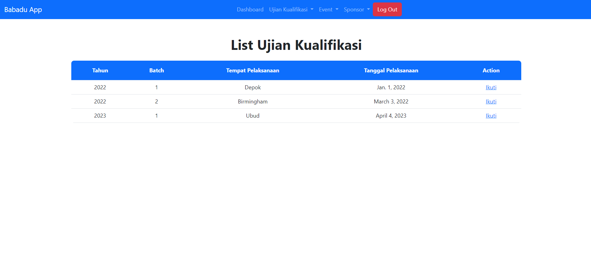
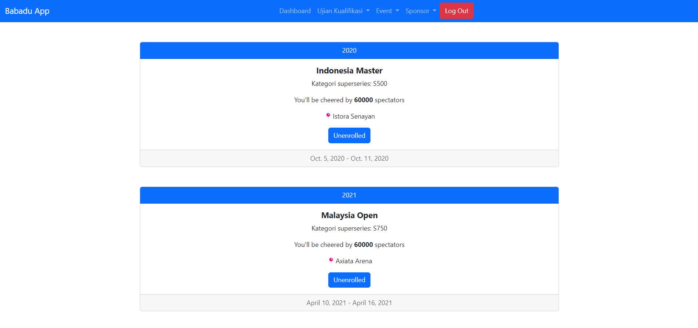
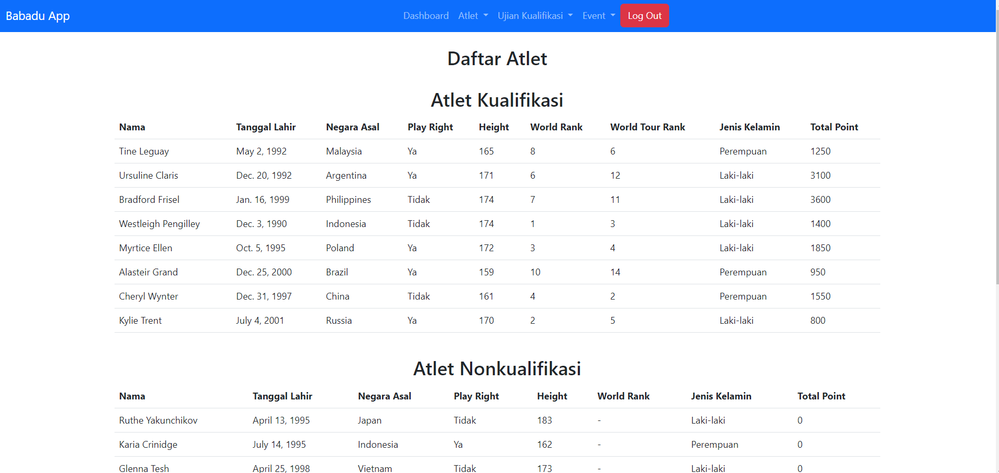
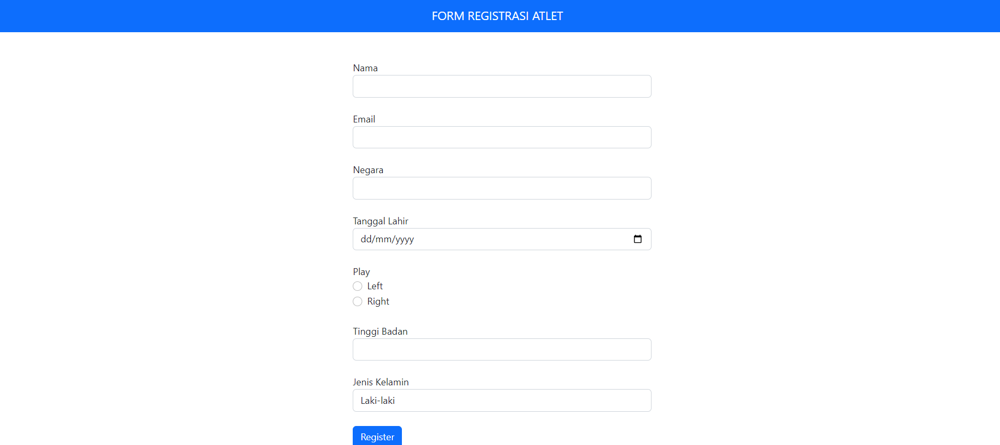
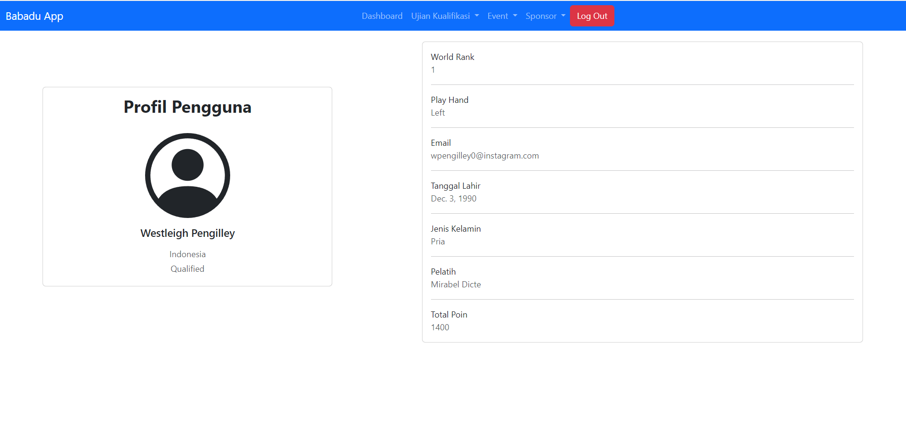

Babadu
A Django and PostgreSQL application for tracking badminton athletes and tournaments.
An application around badminton records
System overview- 01 / PeopleAthlete records
Information about local badminton athletes.
- 02 / Web applicationBabadu
A Django application backed by PostgreSQL.
- 03 / EventsTournament records
Information about badminton tournaments.
The context
Created for a database course, Babadu applies Django and PostgreSQL to the domain of local badminton. The application brings athlete and tournament information into a web interface.
What it does
- Track local badminton athletes.
- Organize tournament information.
- Present badminton records through a web application.
A look at the interface.
Swipe or scroll through the screenshots. Open an image for a closer look.





Screenshot 1 / 5